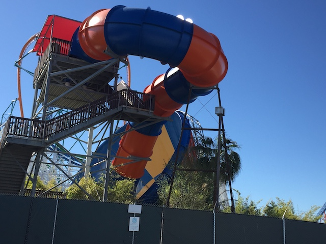
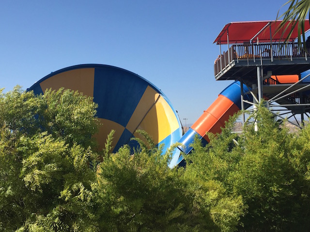
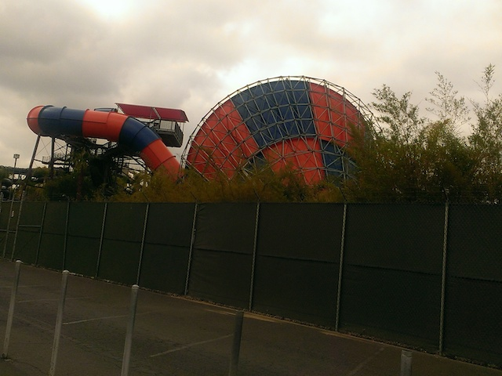
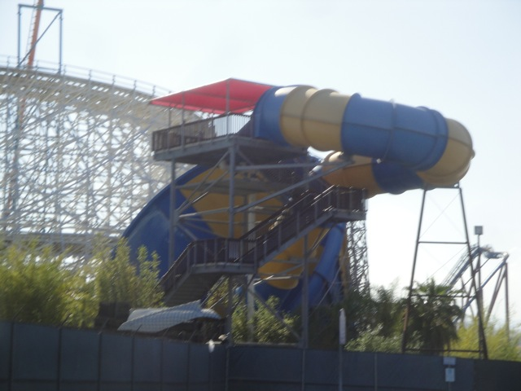
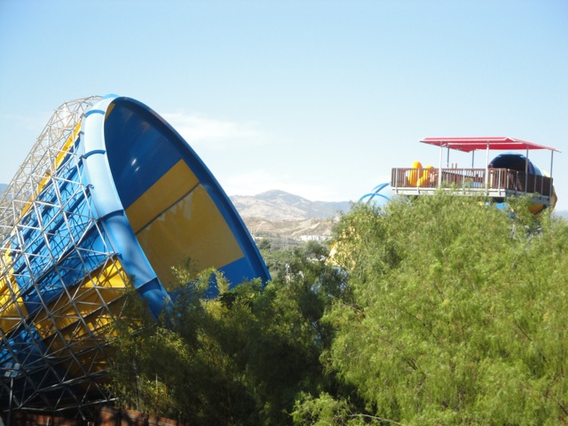
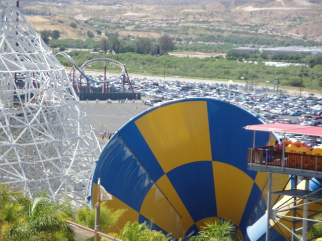
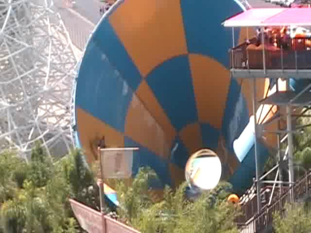
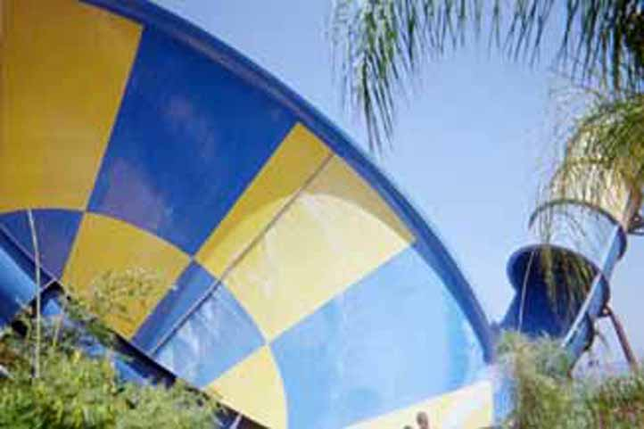
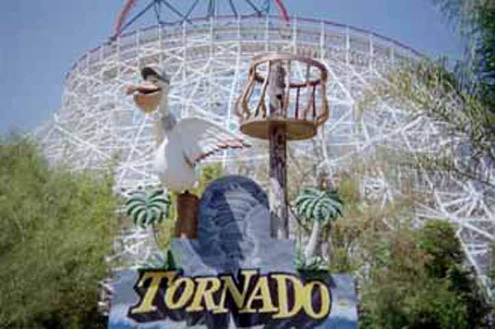

| |
Tornado Photos

We're here at Six Flags Hurricane Harbor, where we'll be reveiwing Tornado. Tornado, as you may have guessed is a Tornado Clone. Ok, time for the review. After climbing up the stairs with your bigass four person tubes, you reach the top, get comfortable in your tube until the lifeguard pushes your tube into the darkness. It feels weird going through the first turn, hoping that you will spin so you face backwards for the drop, and then you drop. It's a fun Tornado Drop, then you go up high in the funnel, only to come back down and do it again. Then rinse and repeat until you reach the end. So yeah, it's just another Tornado Clone. I recommend riding this if you're at Six Flags Hurricane Harbor.
7/10
Location: Six Flags Hurricane Harbor
Opened: 2004
Built by: ProSlide
Last Ridden: July 22, 2023
I have ridden this exact same ride at the following waterparks.
Six Flags Hurricane Harbor (Phoinex)
Tornado Photos












Home
|